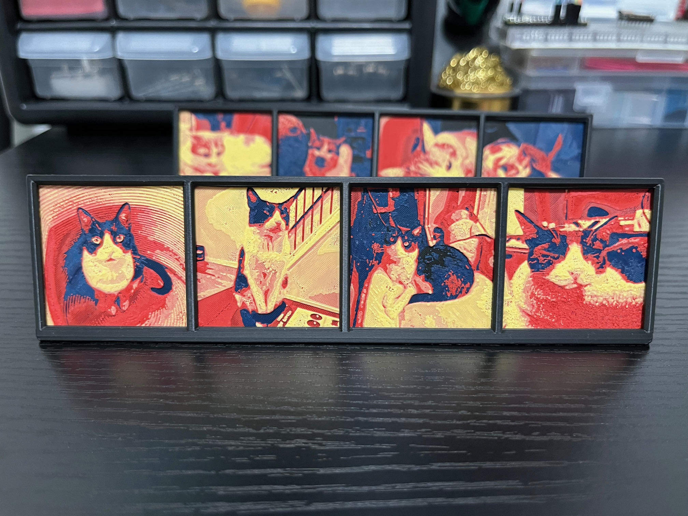
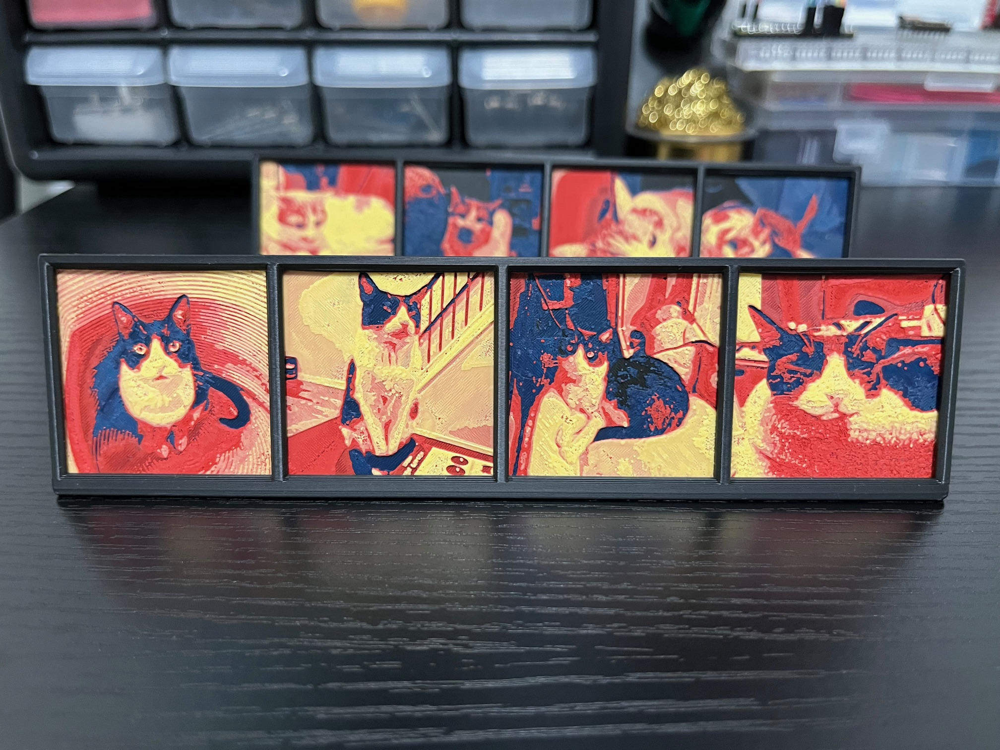

HueForge Portrait Stand
I stumbled across the HueForge software in videos from the 3D Printing Nerd and Teaching Tech channels. At the time, I only had my Artillery Genius 3D printer, and filament changes were not the most graceful experience, nor did I have an abundance of filament colors to form a good color palette. I recently picked up a refurbished Bambu Lab P1S with AMS from my local MicroCenter and since then I've also accumulated a much larger filament library. I picked up a copy of HueForge and made some portraits (meant to be 40mm2, but ended up 39.5mm2, whoops) with an accompanying frame so my girlfriend and I could enjoy unique photos of our cats on our desk.
 

Download Stand Files
Airtag Holder with HueForge Portrait
After getting familiar with basic HueForge portraits, I thought it would be nice to be able to take one with you on the go, and adding it to an airtag holder seemed to be the perfect application. The design for this has pretty tight tolerances and took many iterations to find the right feel when opening and closing the holder (although that really shouldn't be a common occurrance). The version of the holder with the cutout needs to be printed with support (unfortunately), and the best way to make it removeable is to make the first layer around ~40% dense.
Download Files
2x3 Macropad
I've been interested in custom keyboards and macropads for a long time now, but I haven't actually built a fully custom keyboard/macropad until this project. The macropad uses a RP2040 seeedstudio microcontroller programmed with QMK.
IKEA SKÅDIS Accessories
The IKEA SKÅDIS is IKEA's multi-sized modular pegboard offering, and as such has a large quantity of models premade for it on common model sites. Many of the containers/holders/shelves I've wanted I've been able to find without having to model myself, but I've also created a handful of custom attachments to attach various items to the pegboard. These are all either remixed from model files from other users or use the attachment mechanisms designed by other users in order to maximize compatibility and minimize duplicated work.
8Bitdo Controller Stand
Stand for the 8Bitdo Ultimate C wireless controller. The base of the stand can be used to display the trinket keychain that comes with the controller, or the charging cable/USB dongle.
Download Files
Puzzle Sorting Trays
These trays are modeled to be compatible with the Gallison brand sorting trays. The model is formed from a simple sketch and only a couple extrusions, modeling larger or segmented trays should be easy to do.
Download Files
Headphone Holder
A simple headphone holder meant to be mounted on the edge of a desk. Model is designed for a 18.5mm thick desk and a Gorilla mounting tape square, but the design should hopefully be easily modifiable through the STEP file if you have slightly different needs.
Download Files
Dishwasher Indicator
For indicating from the outside whether the dishes contained within are dirty or clean. A pretty simple print overall, just one color swap to help with legibility and some superglued magnets are needed .
Download Files
Flush Cutters Cover
Simple safety cover for IGAN branded flush cutters to prevent accidental injury. Should not be treated as foolproof, it is just attached via friction fit and can slide off when the handles are compressed, depending on your printers tolerances.